📹 Microsoft Teams Live Event
Complete Guide for Arizona College Faculty & Staff
1 Schedule a Live Event
1 Open Microsoft Teams and click the Calendar icon on the left sidebar.
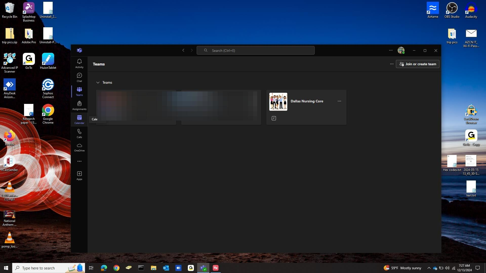
Click the Calendar icon in the Teams sidebar
2 Click the dropdown arrow ▾ next to + New Meeting (top-right corner).
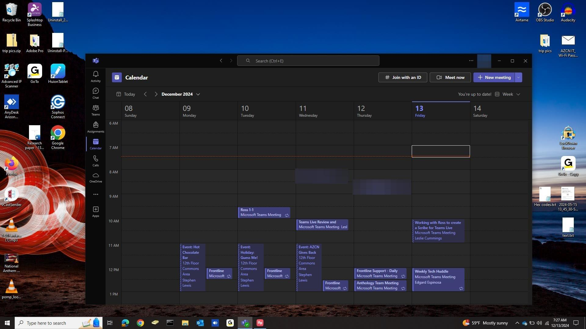
Click the dropdown arrow next to "+ New Meeting"
3 Select Live event from the dropdown menu.
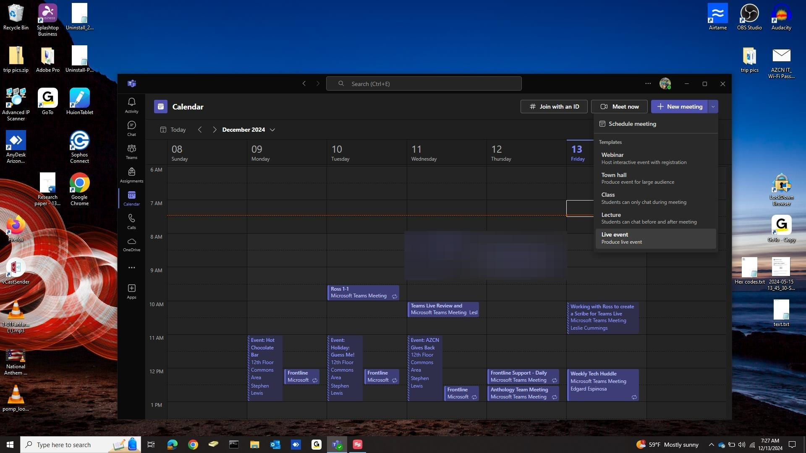
Select "Live event" from the dropdown
4 If prompted, choose "Continue to web" (or stay in the desktop app if the option appears).
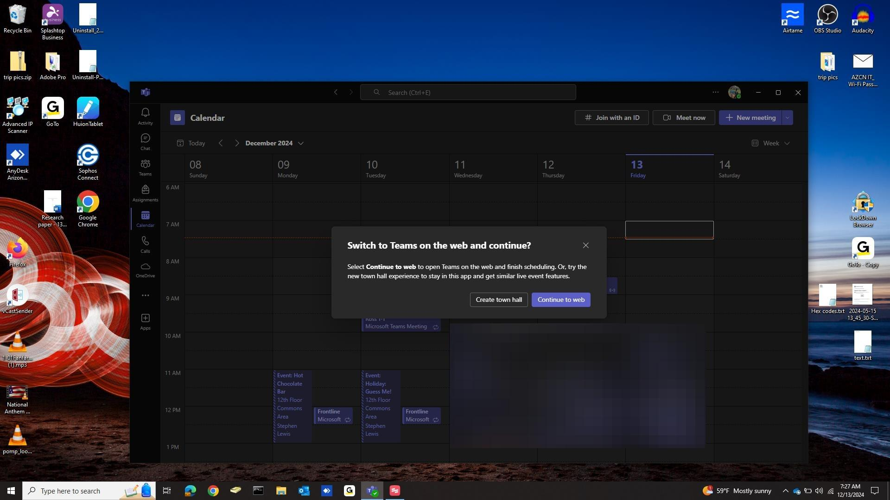
Choose "Continue to web" if prompted
5 Sign in with your Arizona College credentials if asked.
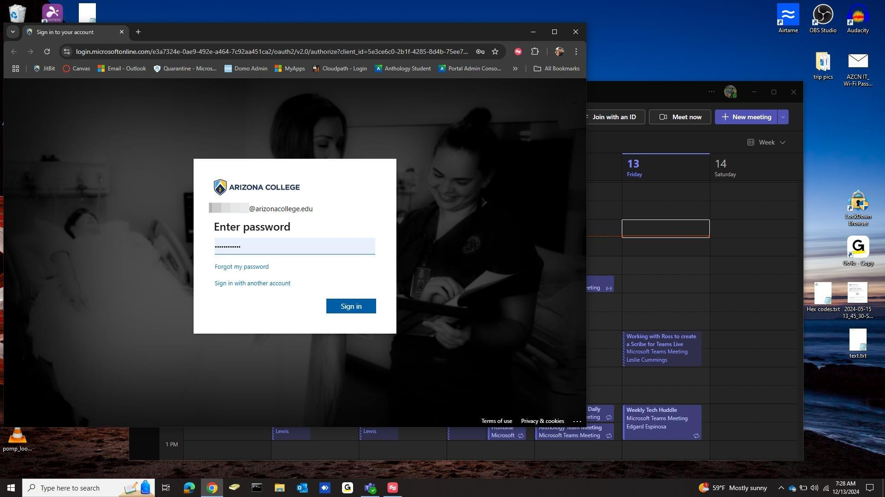
Sign in with your Arizona College account
6 Fill in the event details:
- Title – A descriptive name (e.g., "CHM130 Final Review – Spring 2026")
- Start / End – Date and time
- Details – Optional description for presenters
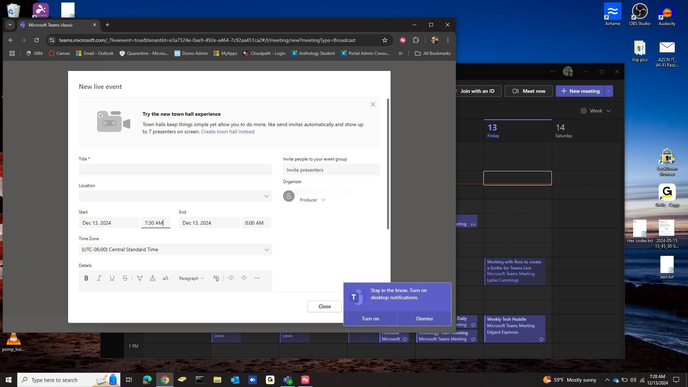
Fill in the event title, date, time, and description
7 Under "Invite presenters", search for and add anyone who will present. Then click Next.
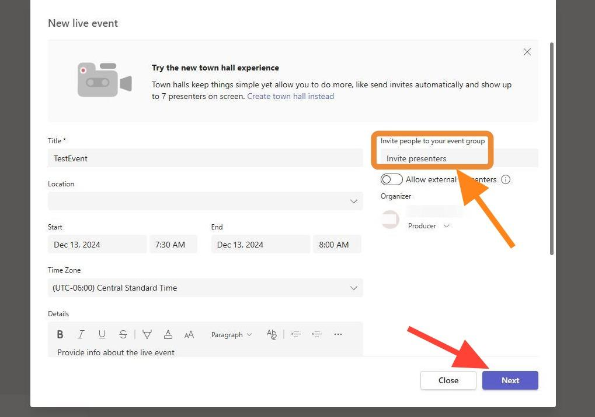
Add presenters and click Next
8 On the permissions page, select who can attend:
- People and groups – Only invited users
- Org-wide – Anyone in Arizona College
- Public – Anyone with the link (no sign-in required)
Under "How will you produce?", select Teams (recommended). Then click Schedule.
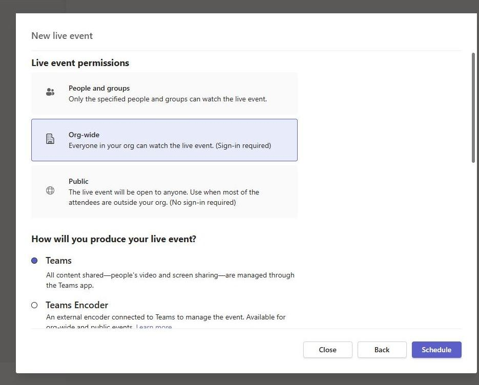
Choose audience scope and production method, then Schedule
2 Produce & Run the Live Event
1 Open Teams → Calendar → click the live event → Join.
2 You'll enter the Pre-Live Lobby. Your camera/mic feeds and any shared content appear on the left as sources.
3 Select a feed from the left panel. It appears in the Queue (Preview) area on the right.
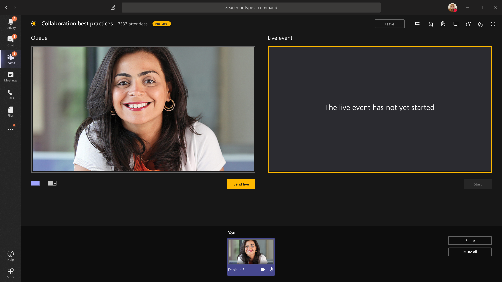
Select a feed — it loads in the Queue/Preview panel
4 When ready to go live, click "Send live". The queued content moves to the Live Event panel and begins broadcasting.

Click "Send live" to push the queued content to the broadcast
5 To switch content, select a different source on the left, preview it in the Queue, then click Send live again.
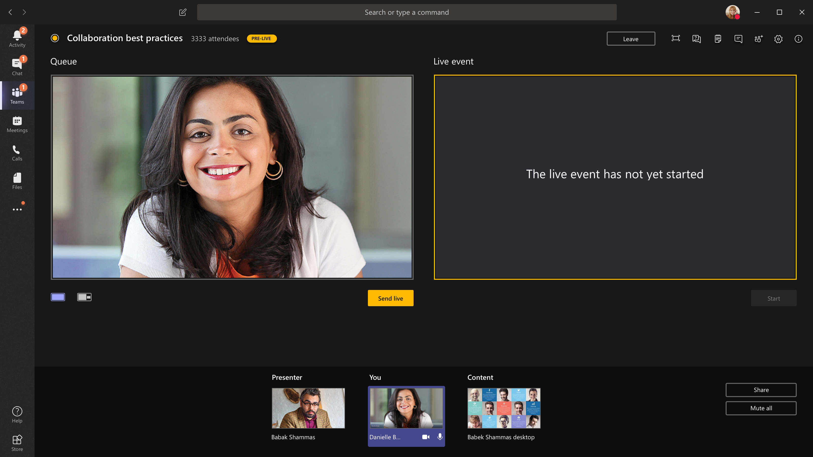
Multiple feeds available — select, preview, send live
6 To share your screen or window, click the Share button in the toolbar and pick the content to share. That content becomes another source in your feed list.
7 To pause the broadcast, stop sending live content. Attendees will see a "Live event will resume shortly" message.
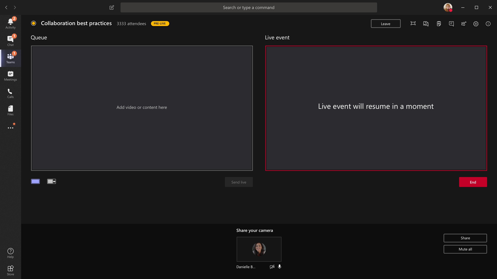
Attendees see this holding screen when no content is live
8 Use the Q&A panel (bottom right) to view and answer audience questions. You can publish answers for everyone or reply privately.
9 When finished, click End → End live event. The recording will be processed and available to attendees automatically.
3 Managing Q&A
- Open the Q&A panel before going live so it's visible to attendees from the start.
- Assign a colleague as a dedicated moderator so the producer can focus on the broadcast.
- Publish select questions so all attendees can see the answer.
- Use Make an announcement to post messages to the Q&A feed (e.g., "We'll take questions at the end").
- You can close Q&A at any time and reopen it later.
4 After the Event
- Recording – Available automatically. The organizer can download or delete it from the event detail page in Teams or Stream.
- Attendance report – Download from the event detail page (CSV).
- Q&A report – Export answered and unanswered questions (CSV).
- Share the recording – Post to Canvas, email, or Stream for students who missed the live broadcast.
5 Troubleshooting
| Issue | Solution |
|---|---|
| "Live event" option missing | Contact IT – your account may need the Live Events policy enabled. |
| Camera/mic not detected | Check device settings in Teams (⚙️ Settings → Devices). Close other apps using the camera. |
| Attendees can't join | Verify the attendee link is correct. If set to "People and groups", ensure they were invited. |
| Poor video quality | Use a wired connection. Lower camera resolution if bandwidth is limited. Close bandwidth-heavy apps. |
| "Send live" button grayed out | Select a source in the Queue first. If still grayed, refresh the browser/app. |
| Recording not available | Allow 10–30 minutes for processing after the event ends. Check Stream or the event detail page. |
6 Quick-Reference Checklist
🕐 Day Before
- Event scheduled with correct date, time, and presenters
- Attendee link shared via email / Canvas
- Slides and content prepared
- Test camera, mic, internet
🕐 30 Minutes Before
- Join the event early as Producer
- Verify all presenter feeds appear
- Test screen sharing
- Open Q&A panel
- Do a “Send live” test (before official start, only producers see it)
🕐 During the Event
- Monitor Q&A and respond
- Switch content via Queue → Send live
- Watch the "Live Event" panel to see what attendees see
🕐 After the Event
- Click End → End live event
- Download attendance report
- Download Q&A report
- Share recording link with students
Questions? Contact the IT Help Desk or email helpdesk@arizonacollege.edu